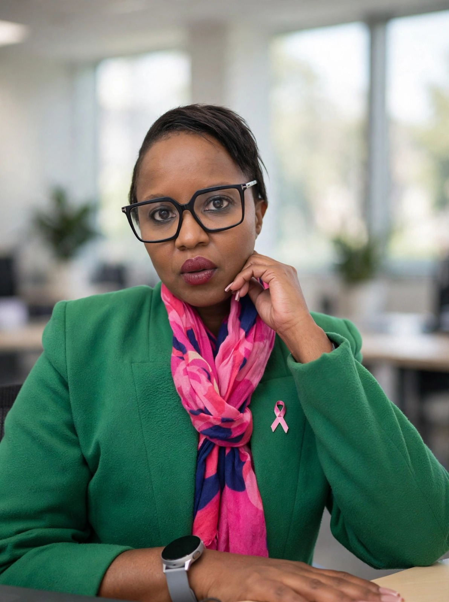

Breast cancer awareness
Early detection
saves lives.
Breast cancer can affect anyone. Knowing your body and getting changes checked can help you take the next step sooner.
Know your body. Speak up. Seek care.

Survivor spotlight
Her fight is our fight.
Tshepiso Mobabi — Strength in Pink - Mabopane Ya Rena
My story began on 14 May 2026, when I was diagnosed with stage 1 breast cancer after finding a small, hard lump in my left breast while lying in bed. It happened by accident. I was not looking for anything that day, but I felt something that had not been there before. My first reaction was fear, but I told myself I would rather feel scared for a day at the doctor than regret not going at all.
That decision changed everything. The tests came back as cancer, but because we found it early, my treatment options and chances of a full recovery are much higher. Hearing the doctor say “caught early” felt like being handed more time with my family, more birthdays, more laughs and more ordinary mornings I almost did not get.
I share this because I know how easy it is to wait, hope it is nothing, or be afraid of what you might find. But early detection gives you power. It gives doctors more options, and it gives you a better chance at a long, full life. If you are reading this and something feels off, please get it checked. The five minutes of courage it takes can add years to your life.
I am here today because I listened to that small, nagging feeling. I am grateful every day for the chance to keep going. I underwent a lumpectomy and am now on home blockers for the next five years because the cancer is hormone sensitive. I still have radiation to go, and I hope to soon ring the bell.
What are the possible signs?
Be aware. Check often.
Get familiar with what is normal for your breasts and look out for changes such as:
- A new lump or thickening in the breast or underarm
- A change in breast size, shape or appearance
- Dimpling, redness or puckering of the skin
- Nipple changes or unusual discharge
- Persistent pain in one area of the breast
Know your breasts,
know your body.
Awareness is one step. Professional medical advice matters, too.
Screening and medical help
Taking the next step matters.
If you notice a change, speak to a healthcare professional. They can assess your symptoms and advise whether you need further tests. Screening recommendations can depend on your age, risk factors and medical history.
For current services, support and opening hours, confirm details directly with CANSA.
Visit CANSA resourcesAwareness grows when we share it
Small actions can make a difference.
Start a conversation, share reliable information, support someone going through treatment, or organise an awareness activity in your community.